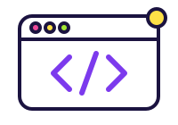
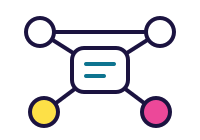

Software
Desarrollo de software, arquitectura limpia, testing y DevOps.
Elige tu ruta o combina sesiones de distintas especialidades con el pase completo.

Desarrollo de software, arquitectura limpia, testing y DevOps.

Infraestructura, SD-WAN, 5G y automatización de redes.
Pentesting, Zero Trust, respuesta a incidentes y forense digital.
Cloud, ERP, datos y transformación digital empresarial.

Cloud Architect · NubeAndina
Migraciones multi-cloud sin downtime.
Ver perfil
Red Team Lead · CiberLab
Anatomía de un ataque a la cadena de suministro.
Ver perfil
Staff Engineer · Kernel.pe
Diseño de APIs que sobreviven a su segundo año.
Ver perfilCampusTech reúne a estudiantes, docentes y empresas en un mismo espacio de aprendizaje aplicado.
Sesiones dictadas por profesionales que trabajan hoy en cloud, seguridad, redes y desarrollo de software.
Ocho talleres con cupos limitados en los laboratorios del campus, con equipos y entornos ya configurados.
Stands de empresas aliadas con prácticas preprofesionales y revisión de CV en vivo.
Constancia de participación con horas académicas para quienes asistan al 80% de su track.
Empresas y comunidades que hacen posible esta edición.
La preventa cierra el 30 de septiembre. Los estudiantes UTP acceden con su correo institucional.